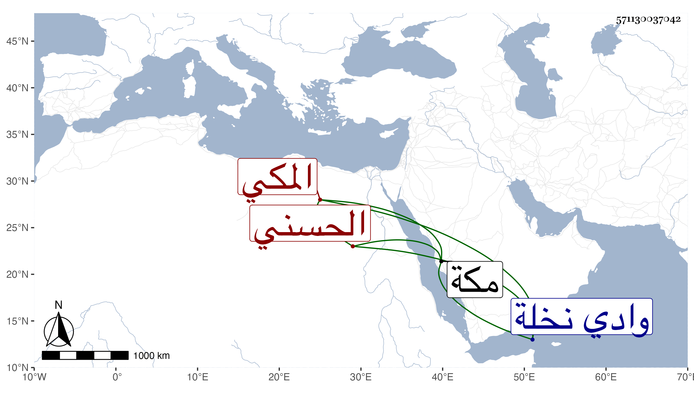

0902Sakhawi.DawLamic.ITO20230111-ara1.EIS1600.571130037042
Biography ID: 571130037042
590
فواز بن عقيل بن مبارك بن رميثة بن أبي نمي الحسني المكي . كان ممن أغار على مكة مع بني عمه وغيرهم من الأشراف والقواد في رمضان سنة عشرين فقتل يومئذ وهو في عشر الثلاثين ظنا ، وكان كثير التسلط على أهل قرية المبارك من وادي نخلة والتكليف لهم . ذكره الفاسي .
